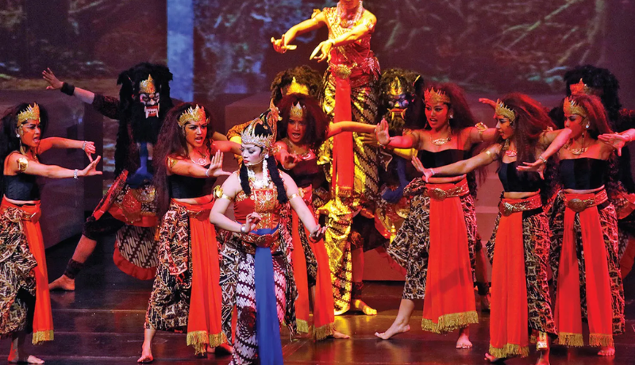
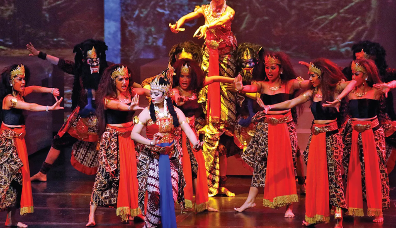
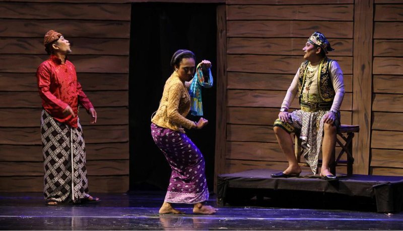
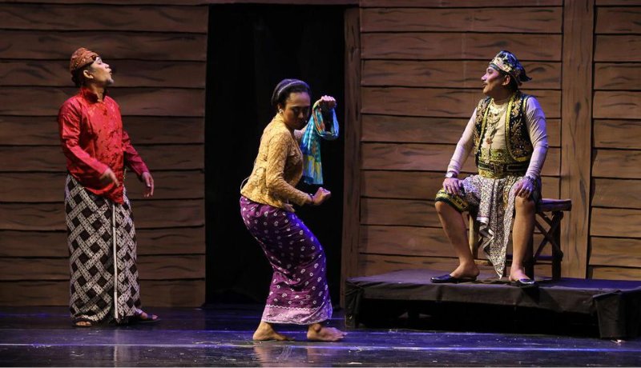

Reog Ponorogo
Reog Ponorogo adalah seni pertunjukan tradisional dari Ponorogo, Jawa Timur, Indonesia. Pertunjukan ini menampilkan tarian dan pertarungan dramatis antara Singo Barong (kepala singa raksasa) yang dipakai oleh seorang pemain dan kelompok Warok, pahlawan lokal. Reog Ponorogo bukan hanya sebuah tontonan seni pertunjukan, tetapi juga mencerminkan kekayaan budaya, mitologi, dan nilai-nilai lokal. Pertunjukan ini terus dilestarikan sebagai bagian penting dari warisan budaya Indonesia.
 


 
